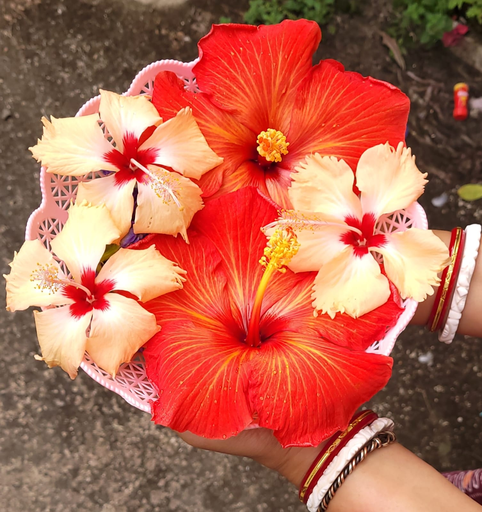
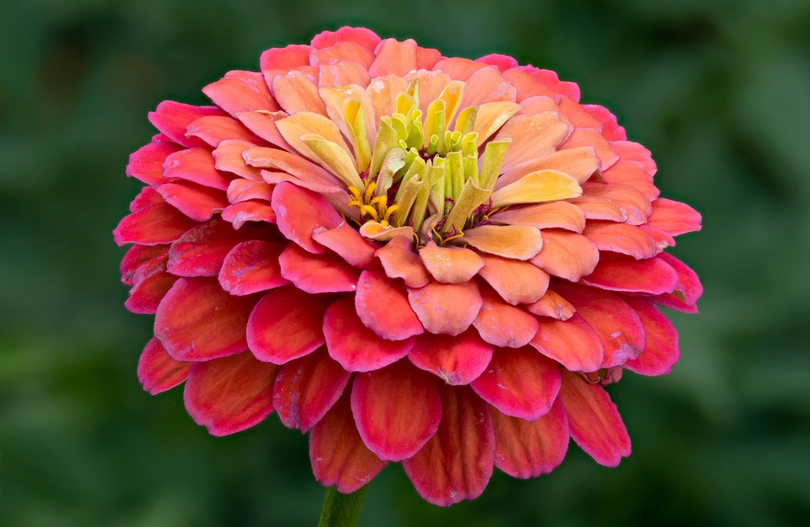
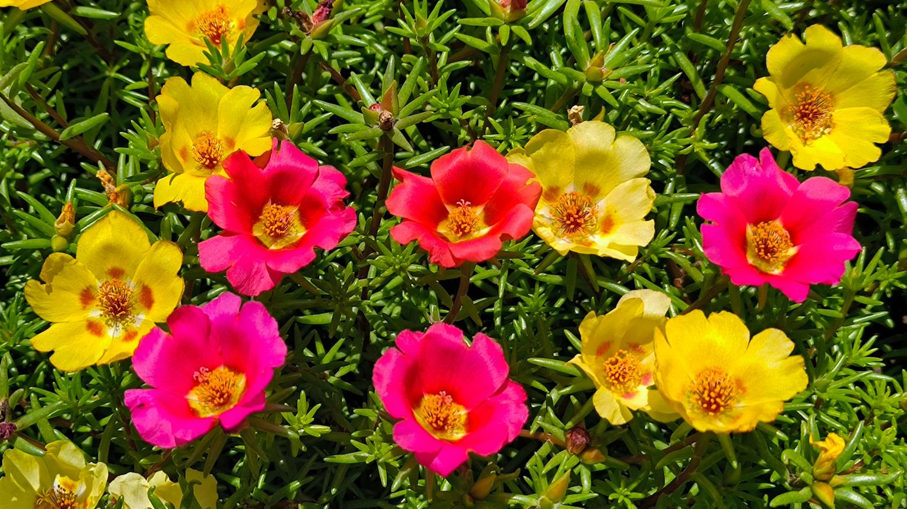
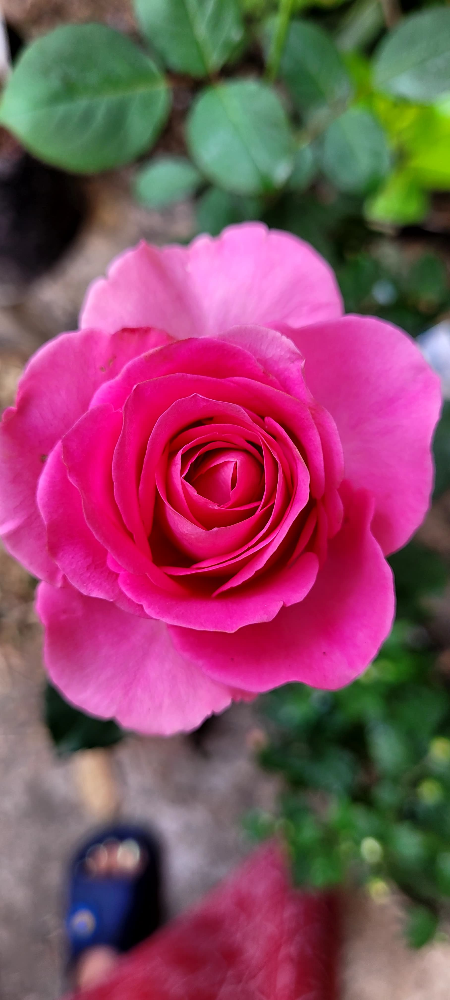
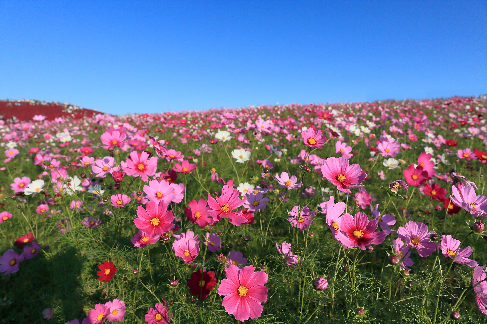

Summer's hot flowers
Summer is the brightest and warmest season of the year, bringing long sunny days, clear blue skies, and vibrant natural beauty. Although the weather can be hot, it is also the perfect time for many colorful flowers to bloom in full glory. Gardens come alive with brilliant shades of yellow, red, pink, orange, purple, and white, creating a cheerful and refreshing atmosphere wherever they grow. Summer flowers are specially adapted to thrive under strong sunlight and warm temperatures. With well-drained soil, regular watering, and plenty of sunshine, they produce abundant blossoms throughout the season. Their vibrant colors not only enhance the beauty of gardens but also attract butterflies, bees, and other pollinators, helping to support a healthy and balanced ecosystem. Popular summer flowers such as Sunflower (সূর্যমুখী), Hibiscus (জবা), Rose (গোলাপ), Zinnia (জিনিয়া), Portulaca (নয়টা ফুল), and Cosmos (কসমস) are admired for their vibrant blooms, long flowering period, and easy maintenance. Whether planted in home gardens, balconies, parks, or flower beds, these flowers fill every corner with warmth, freshness, and natural charm. More than just ornamental plants, summer flowers symbolize joy, energy, happiness, and new beginnings. Their colorful blossoms remind us to appreciate the beauty of nature even during the hottest days of the year. A garden filled with summer flowers becomes a peaceful retreat where people can relax, enjoy the sunshine, and experience the vibrant colors that make the summer season truly unforgettable.

Hibiscus is a beautiful flowering shrub admired for its large, colorful blossoms. It blooms abundantly during the hot summer months in shades of red, pink, yellow, orange, and white. The plant grows best in bright sunlight and moist, fertile soil. Hibiscus flowers are commonly used in religious ceremonies and traditional hair care. Their vibrant blooms attract butterflies and add elegance to any home garden. To keep a Hibiscus plant healthy and flowering, place it in a location that receives 6–8 hours of direct sunlight every day. Water the plant regularly to keep the soil evenly moist, but avoid overwatering, as waterlogged soil can damage the roots. Feeding the plant with a balanced fertilizer every 2–3 weeks during the growing season encourages lush green leaves and abundant blooms. Regular pruning of old branches and removing faded flowers also helps the plant grow bushier and produce more flowers throughout the summer.
Sunflower is one of the brightest and most cheerful flowers of the summer season, admired for its large golden-yellow petals and dark brown center. It grows best in full sunlight and fertile, well-drained soil, making it a perfect choice for home gardens and open landscapes. Sunflowers attract bees, butterflies, and birds, adding life and beauty to the garden. To keep the plant healthy, provide at least 6–8 hours of direct sunlight every day and water it regularly, especially during hot weather. Avoid overwatering, as excessive moisture may damage the roots. Applying organic compost or a balanced fertilizer every few weeks helps produce stronger stems and larger, brighter flowers.

Zinnia is a colorful summer flower loved for its vibrant blooms in shades of red, pink, yellow, orange, purple, and white. It blooms continuously throughout the season and is widely planted in flower beds, borders, and containers because of its cheerful appearance and long flowering period. Zinnias thrive in full sunlight and well-drained soil with moderate watering. Remove faded flowers regularly to encourage new blooms and keep the plant looking fresh. Applying compost or a light fertilizer every month helps maintain healthy growth and vibrant blossoms.

Portulaca, also known as Moss Rose or নয়টা ফুল, is a low-growing flowering plant famous for its colorful blooms and succulent leaves. The flowers open only in bright sunlight and bloom in shades of pink, yellow, orange, red, white, and purple, creating a beautiful carpet of color during summer. This plant prefers full sunlight and sandy, well-drained soil. Since Portulaca is drought-tolerant, it requires only light watering. Overwatering should be avoided, as it can cause root rot. Occasional feeding with a balanced fertilizer promotes healthier growth and more flowers.

Rose is one of the world's most admired flowering plants, known for its elegant shape, delightful fragrance, and wide variety of colors including red, pink, yellow, orange, white, and peach. It is widely grown in home gardens, parks, and landscapes because of its timeless beauty and charm. Roses thrive in 6–8 hours of direct sunlight with fertile, well-drained soil and regular watering. Pruning old branches, removing faded flowers, and applying organic compost or rose fertilizer every few weeks encourage healthy growth, stronger stems, and abundant blooms throughout the flowering season.

Cosmos is a graceful flowering plant admired for its delicate petals and soft, feathery green foliage. Its elegant flowers bloom in shades of pink, white, crimson, and purple, bringing natural beauty and charm to gardens. Cosmos is also a favorite among butterflies and bees because of its nectar-rich blossoms. The plant grows well in full sunlight and well-drained soil with moderate watering. It does not require rich soil and performs well with minimal care. Removing dried flowers and occasional pruning encourages continuous blooming throughout the summer months.